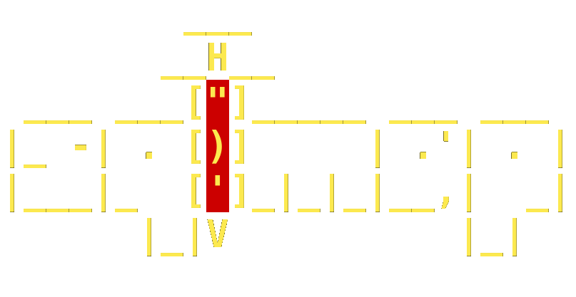

Sqlmap is an open source penetration testing tool that automates the process of detecting and exploiting
SQL injection flaws and taking over of database servers. It comes with a powerful detection engine, many niche
features for the ultimate penetration tester and a broad range of switches lasting from database fingerprinting,
over data fetching from the database, to accessing the underlying file system and executing commands on the
operating system via out-of-band connections.
Sqlmap is able to detect and exploit five different SQL injection types:
- Boolean-based blind: sqlmap replaces or appends to the affected parameter in the HTTP request, a
syntatically valid SQL statement string containing a SELECT sub-statement, or any other SQL statement whose
the user want to retrieve the output.
- Time-based blind: sqlmap replaces or appends to the affected parameter in the HTTP request, a
syntatically valid SQL statement string containing a query which put on hold the back-end DBMS to return for
a certain number of seconds.
- Error-based: sqlmap replaces or appends to the affected parameter a database-specific error message
provoking statement and parses the HTTP response headers and body in search of DBMS error messages
containing the injected pre-defined chain of characters and the subquery statement output within.
- UNION query-based: sqlmap appends to the affected parameter a syntactically valid SQL statement
starting with an UNION ALL SELECT.
- Stacked queries, also known as piggy backing: sqlmap tests if the web application supports stacked
queries and then, in case it does support, it appends to the affected parameter in the HTTP request, a
semi-colon (;) followed by the SQL statement to be executed